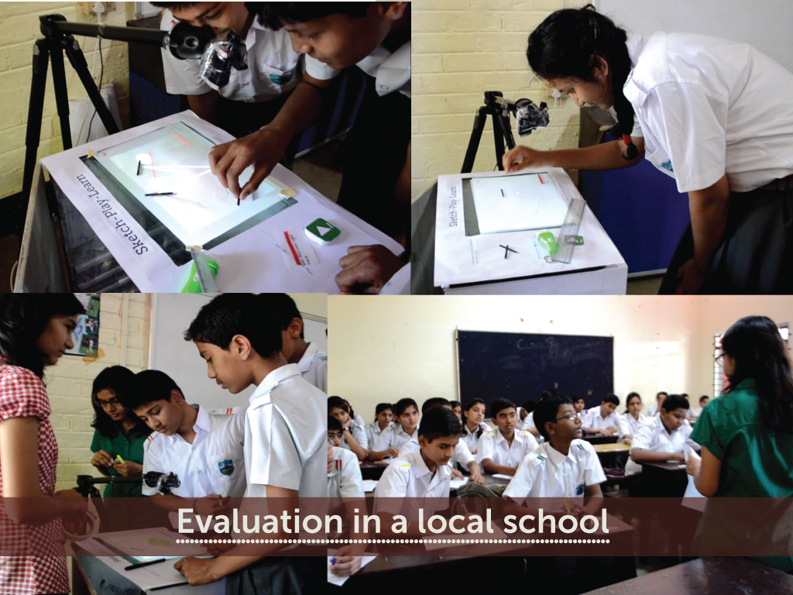

Overview
Project overview
Duration: Feb - April 2014
Team: Richa Tripathi, Bhawna Agarwal
Prototyping: Processing language (JAVA environment)
Responsibilities: Needfinding, Conceptualization, Design, Prototyping, Experiment & Questionnaire design, Evaluation, Analysis
Publication: Published in the proceedings of the 2015 ACM SIGCHI Conference on Creativity and Cognition, Glasgow
Designing in the field of Education and Learning excites me. This project has been an immense learning experience for me and Richa (project member). We've blogged about the various stages of the project (and our experiences) here - http://augmentedrealityeducation.wordpress.com/
The project involves conceptualization and prototyping (along with user testing) of educational interfaces. It explores the domain of paper based augmented reality and tangible user interfaces. This project made me go hands on with technology and learn how technology has expanded the interaction space of people.
We were lucky to explore the technologies such as image processing, Fiducials, line and color detection and were able to make the system fully functional (which involved coding in Processing). The system was then evaluated at a school to compare the differences in learning outcomes at individual and group levels between students using two learning methods: the conventional approach and augmented tabletop with tangible input.
The 'what'
Project abstract
Sketch-Play-Learn is an augmented paper-based tabletop system to support students learning of the principles of light behavior. This project emphasizes the use of most ubiquitous and inexpensive learning medium, which is paper. Students engage themselves in completing a goal-based task sketched by the teacher on paper and observing the visual feedback on the same paper. We argue that augmenting the paper with digital information while providing a tabletop setup provides a novel and appealing approach to learning for classroom use.
{kind=link}
The Sketch-Play-Learn tabletop system
Concept video
The following video explains what we plan to build i.e. our concept video!
Live demo
Here is a video of a student playing with Sketch-Play-Learn
Design and prototyping
What was our process?
Here is the process blog that also talks about our experiences throughout our project. We used an iterative design process wherein results of user testing were crucial in redesigning the interface. The goal was to keep the interface simple involving intuitive interaction and which is appealing and understandable to the children, both in terms of the information as well as the colors and fonts used. After doing a thorough literature research to find out the concepts which were given in the science books of class 7 and class 8, we made a list of these concepts and refined it to finalize what we aim to teach. Special attention was given to the figures and diagrams of the experiments given in the book which was used in designing the elements of the interface.
The design and selection of appropriate physical representations is a very important aspect of tangible interface design. We got this finding from Study I and hence, actual mirrors were used as tangibles. Study II showed that this representation enhanced learning as it gave the students a feel of the real world interactions.
The light ray travels on the paper and the information is projected adjacent to the sketch (co-located). Adding a separate screen for displaying information diverts the attention of the users. Hence, the physical paper was augmented with digital information so as to provide a better user engagement

We implemented our system using the Processing language. An overhead camera captures the image of the tabletop using JMyron library for processing. Image processing was used to detect the lines and colors using the OpenCV library for processing. Additionally, we used the reacTIVision technology to identify the markers (play and pause). The markers were tagged with fiducials and tracked using an additional camera kept at the bottom. Thus the system uses two cameras and a projector for displaying the path of light and other information.
Evaluation
Bringing it infront of our users
Studies were conducted with 39 students of 8th grade in a local school of Guwahati. Goal of the study was to assess students’ understanding of the concepts from Sketch-Play-Learn over conventional methods, and to collect user’s feedback and reaction to the proposed system. Qualitative as well as statistical feedback was gathered for better observations.
Tabletop setup was kept at the front of the classroom. After making students feel comfortable, a quick question answer session was carried out to brush up their concepts of light taught in their previous classes. Students started taking interest and were quick in answering. A small pre-test designed to check their basic knowledge about light was given to all students. Pre-test consisted of 6 questions, answers to most were of the objective / fill in the blanks type.
The class was then divided into two groups of 20 (Group A) and 19 (Group B) students. Group B was taught the concepts by conventional methods whereas group A was asked to experiment on Sketch-Play-Learn. From group A, two students were called individually to come and try their hands on Sketch-Play-Learn. Rest 18 students were then divided into 6 groups of 3 students each. Each group was given 15-20 minutes to play around and complete the given task. Sessions were video recorded and detailed observations were made while the students were interacting among themselves and with Sketch-Play-Learn. In between the sessions, questions like “What will happen if the light beam strikes this surface?”, “Why did the color of light change?”, “Oh, you can try doing that” were raised to know their thought process and also to facilitate their interaction.
A written post-test was completed by all students after the whole session concluded. Post-test had a total of 12 questions that included questions identical to pre-test, slightly advanced questions covering the newly taught concepts and 4 feedback questions. In the feedback section, five point likert scale was used to rate the difficulty from very easy to very difficult. Students were also asked to rate their liking towards Sketch-Play-Learn from five stars.